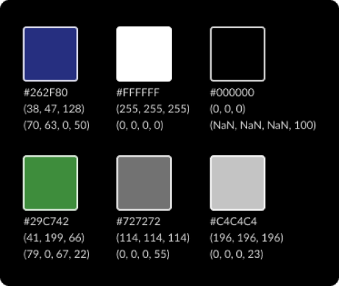
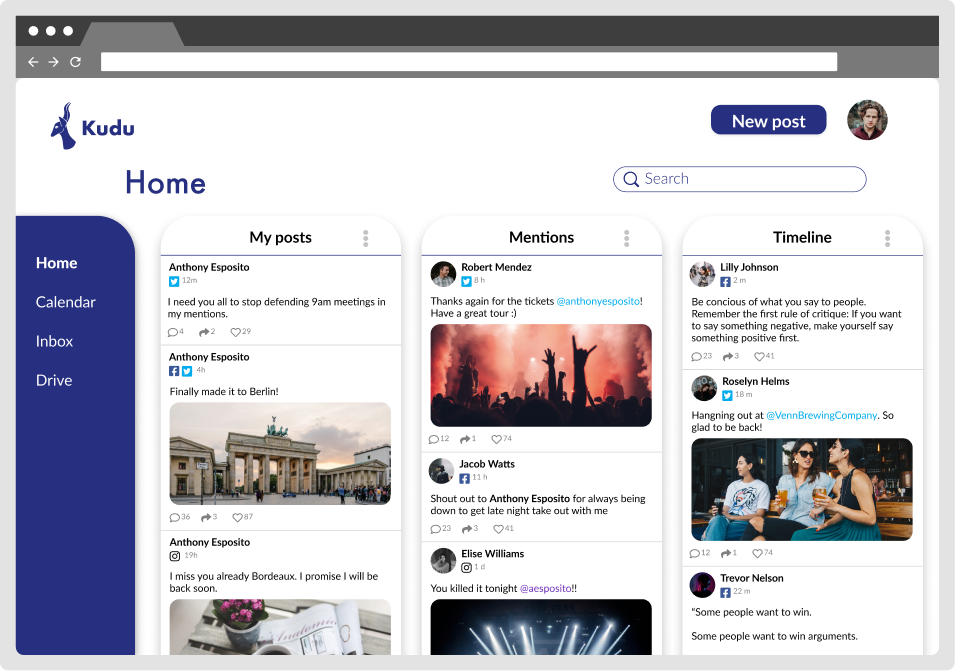

With social media now being the primary medium for
individuals and organizations to network and promote their brand,
they need a platform that allows them to manage and share content
to all of their social networks from one location.
Kudu is essentially a cloud storage/social media management highbread.
Users can manage digital assets, and post to various networks all at once. Additionally,
users can engage with their social network streams, manage their direct messages,
and view simple analytics to track the activity of their shared content.
By speaking with musicians, photographers, composers, and producers,
I became aware of a couple common frustrations:
It’s difficult for digital content creators to be organized.
It takes too much time for content creators to share their brand to all of their social networks.
Vision – Crafting the perfect solution
Establish a cloud storage system that feels familiar to the user.
Enable users to share content to all of their social networks easily.
Allow users to network and interact on all of their social platforms from one location
User survey – Gathering data
In addition to determining which cloud services people were using and how they were using them,
the main goals of my survey were to learn:
how are people storing their content,
where are they sharing that content,
and what social media management (SMM) platforms,
if any, are people most familiar with.
After reviewing the survey results of who these people were, what content they were creating,
and who was interacting with their content, I was able to determine two key users:
Casual Content Creators:
Individuals who network and share content in their spare time.
They might be making some money from their content, but not enough to financially support themselves.
Professional Content Creators:
Successful individuals or small oranizations that are supporting themselves financially by
producing professional level content that reach their fans and potential clients/employers.
Competitive analysis
After reviewing the results from the user survey, it became crystal clear that
the two main platforms worth analyzing were Google Drive as a
cloud storage platform, and Hootsuite as a social media management platform.
As a social media management platform, Hootsuite felt more like a
direct threat to my platform. In a nutshell, Hootsuite allows users to
conveniently utilize multiple social network accounts from one location and
to view detailed analytics of a network or social post performance across channels.
This is where I needed to determine what they’re doing
that I should do, and how they are falling short.
Because I was trying to solve a different problem to what Google Drive is meant for,
I looked to Google Drive more for inspiration on what they were doing well rather
than how they could improve. Because I already knew that my users were already
fluent with Google Drive’s interface, I wanted to emulate a similar experience
so my users would feel at home on my platform.
Wireframes - Piecing it together
Using Figma, I refined my initial sketches into low fidelity wireframes.
For the main dashboard, I wanted users to be able to view their social
media posts, mentions, and timeline. By selecting the three-dot menu icon
in the top right corner of each stream, the user would be able to filter a specific social network or
view all of their activity across all of their networks.
But wait, why the name Kudu?
With my wife being from South Africa, I had the pleasure of being able to visit
her family in Cape Town in 2014. This is where I was first introduced to a Kudu,
an African deer. Not only did I love the way they looked, but I also
just liked saying the word Kudu. It’s a simple four letter name that
represents an animal that not too many people are familiar with. While
I was exploring this name, I thought of brands like Puma, Acorns, Grasshopper,
and even Apple. After learning that Steve jobs chose the name Apple while
being on a fruit diet and simply liked the way apple sounded, I realized
that was enough validation for me to run with the name Kudu.
Designing the logo
After landing on the name Kudu, I proceeded to sketch some possible renditions of the logo.
I looked at many photos of kudus and did my best to capture the energy and mood I was looking for in my logo.
Determining the mood
Now that I had a name and a logo, I needed to determine what kind of emotions I wanted to
convey to the users. While other social media management platforms have a
very corporate feeling, Kudu needed to feel approachable, serious, clean, and simple.
For this project I wanted to incorporate a monochromatic color scheme. I decided to make most of the app white
while the logo and some other elements would be deep blue to create a strong contrast.

I first chose futura for my branding typography because it looks great
next to the logo and it added just the right amount of simplicity and playfulness.
I determined that futura would be used for all branding content as well as some of the larger text.
For the main content I chose to use lato for its legibility as
smaller text and the way it nicely compliments futura.
High fidelity mockups
After reviewing the information architecture and space economy,
I realized that the main content needed more room to breath.
In addition to this claustrophobic feeling, the top of the screen had
two much unused space along with an excessively large search bar.
To resolve this issue, I moved the nav bar to the top of the page and replaced
tab names with simple icons. This improved the hierarchy and overall
energy of all of the pages of the app.

Usability testing
Kudu was finally coming to life and it started to feel like a beautiful solution to
the problem I was attempting to solve. Aside from improving the explanation
of what the product is on the marketing page, the biggest failure
that needed to be addressed was the “New Post” button in the web version.
Some users found the button difficult to locate.
Because of this, I decided to change the color of the “New post”
button to green in order to improve its visual hierarchy
as a primary call to action on every page of the app.
Of the many things that I learned from this project, the main takeaway for
me was the importance of trusting the design process. Although I had
hunches and predictions, I learned to trust my research and allow the
evidence to guide my design decisions. Through my research, I was able
to tackle the project brief and identify a problem that needed to be
explored with a particular audience. Overall, I’m very proud of the
solution that Kudu turned out to be. It is a unique product
that solves an important problem of a growing market.